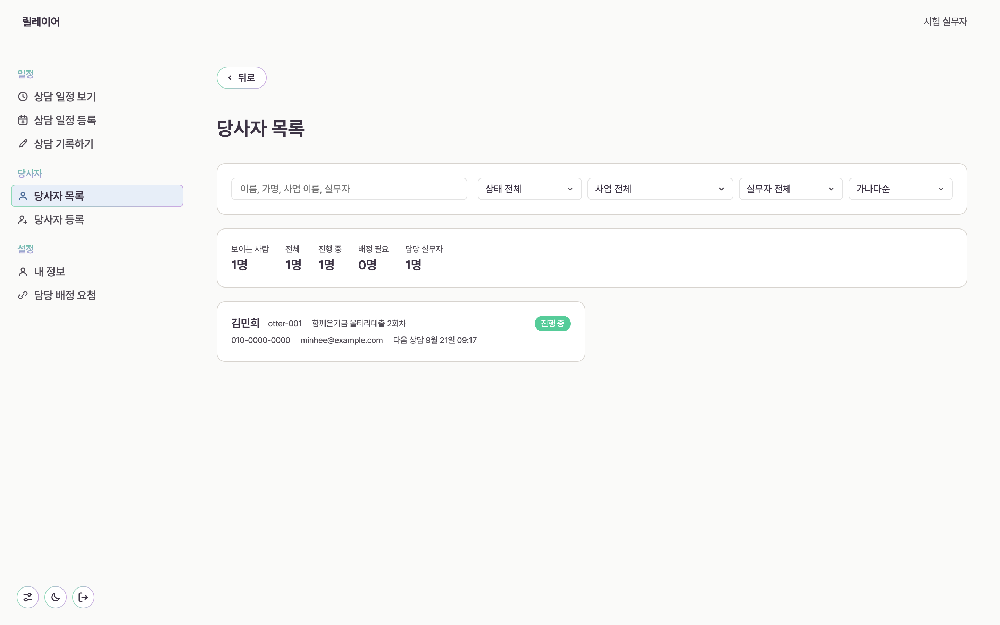
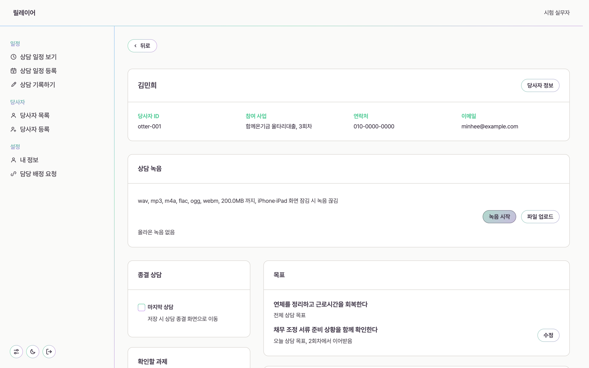
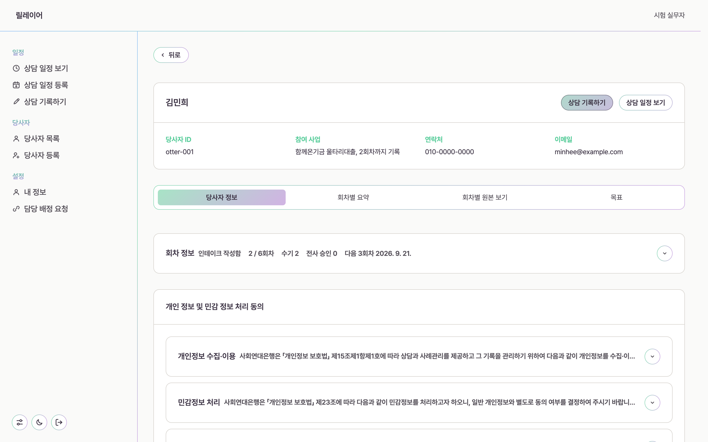

사용자 가이드
상담을 맡은 실무자를 위한 안내입니다. 화면에 적힌 말을 그대로 따라 읽으면 하루가 끝납니다. 읽는 데 10분쯤 걸립니다.
For practitioners
들어오기
기관에서 받은 아이디와 비밀번호로 로그인합니다. 계정은 기관 관리자가 만듭니다. 아직 없다면 관리자에게 초대 링크를 요청하세요. 링크는 만든 뒤 7일 동안만 열립니다.
메뉴의 묶음은 일정, 당사자, 설정 셋입니다. 넓은 화면에서는 왼쪽에, 좁은 화면에서는 본문 위에 섭니다. 메뉴 끝의 둥근 버튼 세 개는 설정, 화면 밝기, 로그아웃입니다.
설정에서 내 정보를 열고 고친 뒤 저장합니다.
상담 일정 보기
로그인하면 이 화면이 먼저 열립니다. 왼쪽 위에서 월간, 주간, 일간을 고르고, 오늘을 누르면 오늘로 돌아옵니다.

달력 아래 다가오는 일정에는 앞으로 할 상담이 모입니다. 각 줄에서 바로 두 곳으로 갈 수 있습니다.
- 당사자 정보를 누르면 그 사람의 지난 상담과 목표를 봅니다.
- 상담 기록하기를 누르면 그 회차의 기록 화면이 열립니다.
새 상담을 잡을 때는 상담 일정 등록을 씁니다. 날짜와 시간, 상담 방법을 정하고, 만나서 하는 상담이면 장소도 적습니다.
당사자 찾기
당사자 목록에는 내가 맡은 사람이 보입니다. 이름, 가명, 사업 이름, 실무자 이름으로 찾을 수 있고, 상태와 사업으로 좁힐 수 있습니다.

새 사람을 받았다면 당사자 등록에서 시작합니다. 이름과 연락처를 넣고 개인 정보 및 민감 정보 처리 동의를 받습니다. 동의를 받지 않으면 다음으로 넘어가지 않습니다.
바깥으로 나가는 자료에는 이름 대신 otter-001 같은 가명을 씁니다. 화면 안에서는 이름이 먼저 보입니다.
상담 기록하기
상담 기록 화면은 한 회차를 담는 자리입니다. 맨 위에 당사자 이름과 회차가 서고, 그 아래로 녹음, 과제, 목표가 놓입니다.

녹음
녹음 시작을 누르면 그 자리에서 녹음합니다. 이미 녹음한 파일이 있으면 파일 업로드로 올립니다. wav, mp3, m4a, flac, ogg, webm 형식을 받고 한 개에 200MB까지입니다.
iPhone과 iPad는 화면이 잠기면 녹음이 멈춥니다. 화면을 켜 둔 채로 두거나, 다른 앱으로 녹음한 파일을 상담이 끝난 뒤에 올리세요.
다음에 할 일
상담에서 다음에 하기로 한 일을 적으면 다음 회차 화면에 다시 뜹니다. 그때까지 확인하지 못한 것은 확인할 과제로 남습니다. 목록에서 지워도 적어 둔 기록은 그대로 남습니다.
목표
목표는 두 층입니다. 상담 전체를 통해 이루려는 것과 오늘 상담에서 하려는 것입니다. 오늘 목표는 지난 회차에서 이어받고, 바꾸면 언제 무엇이 바뀌었는지 남습니다.
지난 상담 보기
당사자 정보 화면은 탭 네 개로 나뉩니다. 사람에 대한 정보, 회차마다의 요약, 회차마다의 원본, 그리고 목표입니다.

- 회차별 요약은 그 회차에서 무엇이 있었는지 짧게 봅니다.
- 회차별 원본 보기는 손으로 적은 기록과 녹음 전사문을 그대로 봅니다.
- 목표는 목표가 언제 어떻게 바뀌었는지 차례로 봅니다.
동의 문안은 개인 정보 및 민감 정보 처리 동의에서 펼쳐 볼 수 있습니다. 받은 그때의 문안이 그대로 남습니다.
상담 종결하기
마지막 상담이라면 기록 화면에서 마지막 상담에 표시합니다. 저장하면 종결 화면으로 넘어갑니다.
종결 화면에서는 끝내는 이유와 남은 과제를 어떻게 할지 적습니다. 종결은 상담 회차로 세지 않으므로 회차 수는 늘지 않습니다.
막힐 때
당사자 목록에 사람이 안 보입니다
내가 맡은 사람만 보입니다. 설정의 담당 배정 요청에서 요청을 올리고 관리자 승인을 기다리세요.
녹음이 중간에 끊겼습니다
iPhone과 iPad는 화면이 잠기면 녹음이 멈춥니다. 남은 부분은 다른 앱으로 녹음해 파일 업로드로 올리세요.
상담 장소를 꼭 적어야 하나요
만나서 하는 상담만 장소가 필요합니다. 전화나 화상으로 한 상담은 장소를 비워 둡니다.
화면이 눈에 부십니다
메뉴 끝의 둥근 버튼 가운데 것에서 밝게, 어둡게, 기기 설정을 고를 수 있습니다.
기관을 열고 실무자를 붙이는 일은 관리자가 합니다.
관리자 가이드 보기